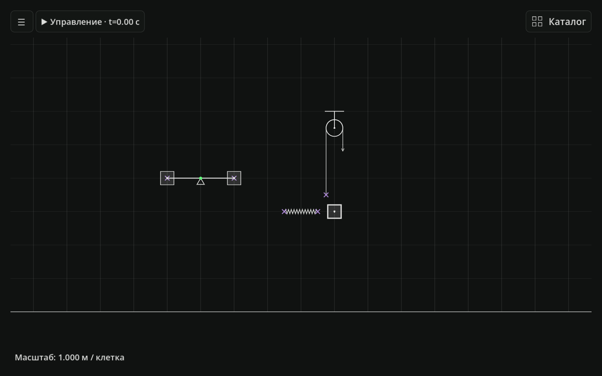
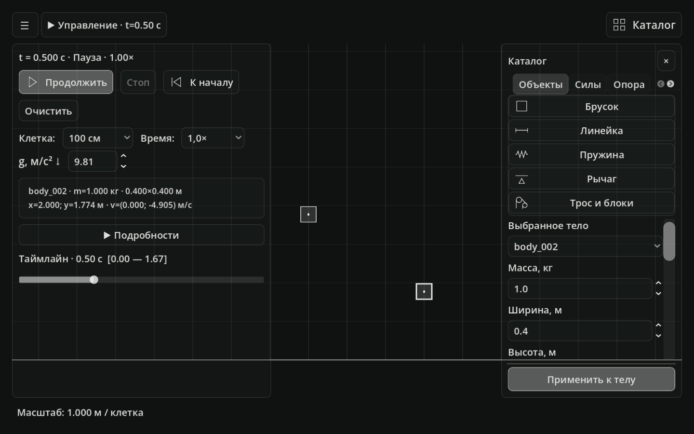
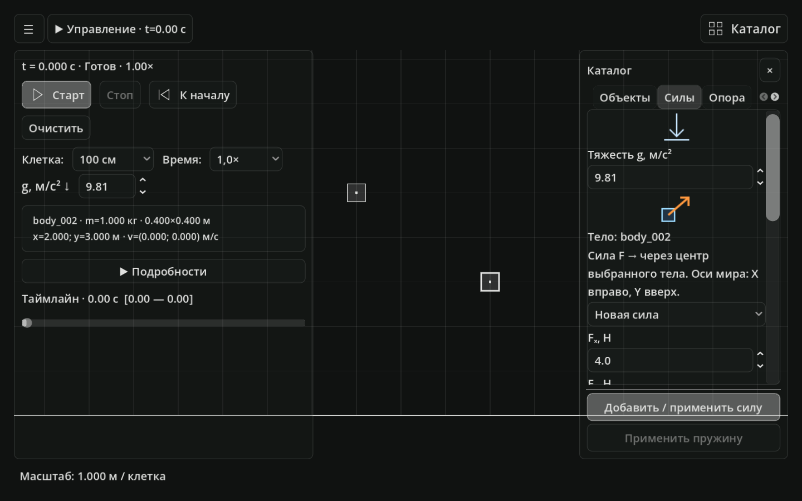
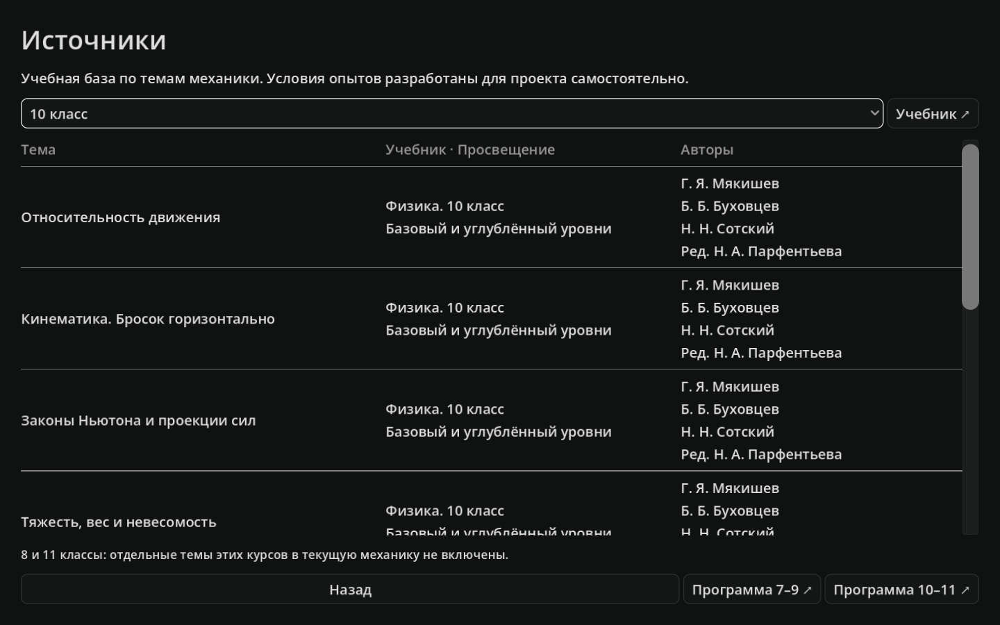
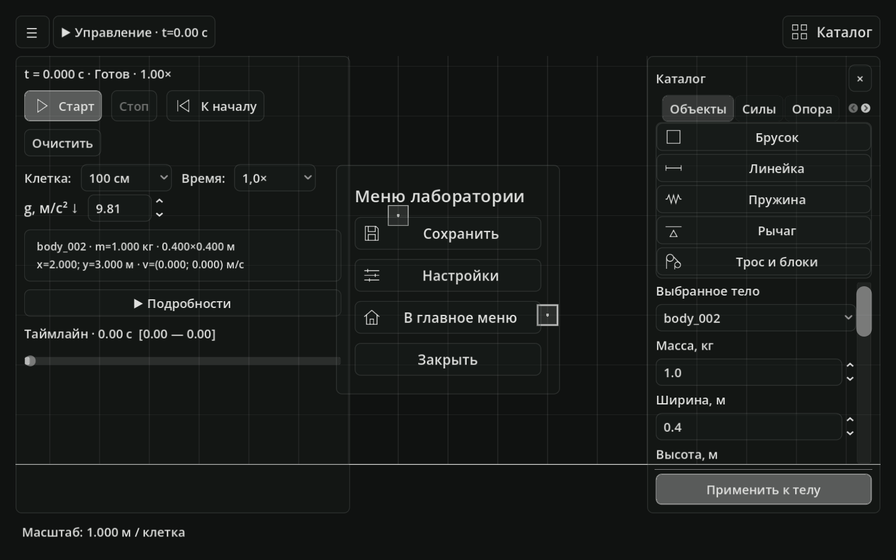

Откройте сцену
Распакуйте скачанный архив, запустите PLab.exe и выберите «Создать сцену» в главном меню.
ВАШЕ РАБОЧЕЕ ПОЛЕОТ «ПОЧЕМУ?» ДО «ТЕПЕРЬ ПОНЯТНО»
Для восьмиклассника, который готовится к механике: меняйте условия и разбирайте движение в собственном опыте.
Windows x64 · v0.18.0 · 42,1 МБ · Без регистрации
В PLab 0.18.0 работает перемотка опыта.
НАБЛЮДАЙТЕ · ПРОВЕРЯЙТЕ




01 / МЕХАНИЗМЫ
Соедините тела с рычагом, пружиной и тросом в одной сцене.
Снимок 1 из 5: механизмы
Готовитесь к механике в 8 классе и хотите понять ход опыта? PLab — учебная 2D-лаборатория, где можно собрать сцену и проверить своё предположение. Вместо просмотра готового объяснения вы меняете условия сами, а таймлайн возвращает состояние к выбранному моменту.
02 / ВАШ ПЕРВЫЙ ОПЫТ
Например: как масса груза
влияет на движение системы?
Распакуйте скачанный архив, запустите PLab.exe и выберите «Создать сцену» в главном меню.
ВАШЕ РАБОЧЕЕ ПОЛЕПеренесите объекты из каталога на холст. Задайте массу и начальную скорость, добавьте силы или механизм.
ВАШИ НАЧАЛЬНЫЕ УСЛОВИЯНажмите «Старт», изучите движение и графики. Поставьте опыт на паузу или вернитесь по таймлайну.
ВАШ ОТВЕТ НА ВОПРОС03 / ЧТО МОЖНО ИССЛЕДОВАТЬ
Начните с падающего бруска. Затем добавляйте связи и возвращайтесь к тому, что хотите понять.
Посмотреть управление04 / ДОСТУП
Механика доступна без оплаты и регистрации. После скачивания приложение работает без интернета.
Пользователь — школьник. Для будущей подписки предполагаемый плательщик — родитель: он оплачивает доступ к дополнительным разделам.
ВАШ СЛЕДУЮЩИЙ ШАГ
Откройте PLab и проверьте свою гипотезу.
Скачать PLabv0.18.0 · Windows x64 · ZIP, 42,1 МБ
Windows x64 и видеодрайвер с поддержкой OpenGL 3.3. Установка Godot не нужна. Переносите всю папку приложения: PLab.exe и PLab.pck должны находиться вместе.
Это учебная 2D-модель. Бруски остаются параллельны осям и не опрокидываются. У отдельных механизмов есть ограничения совместимости. Они описаны в инструкции внутри архива.
PLab 0.18.0, сборка от 17 октября 2026 года. Номер версии и контрольные суммы находятся в RELEASE.json внутри архива. Открыть сведения о выпуске. Новые версии появляются после обновления страницы автором.